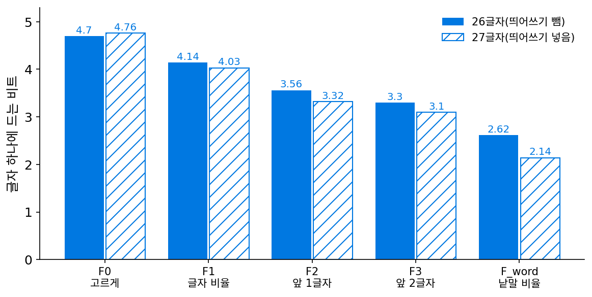
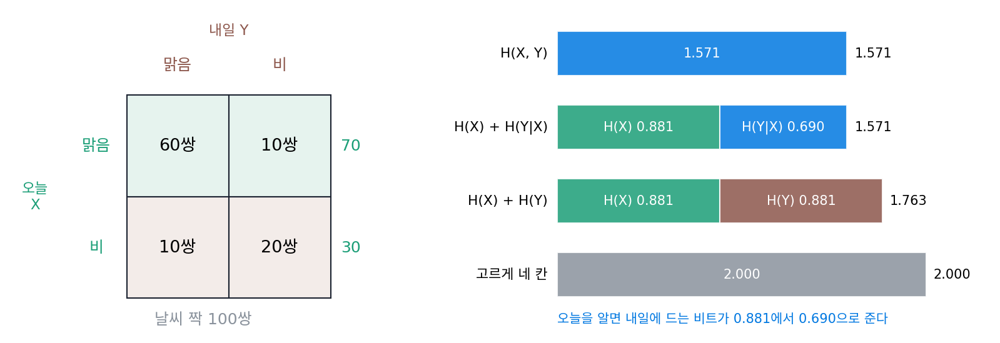
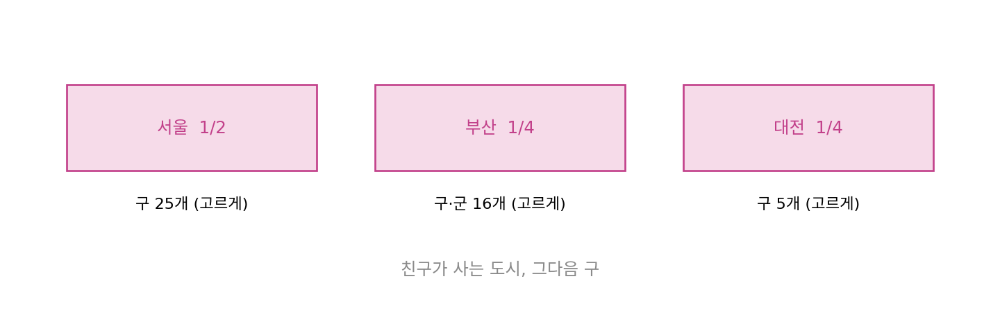
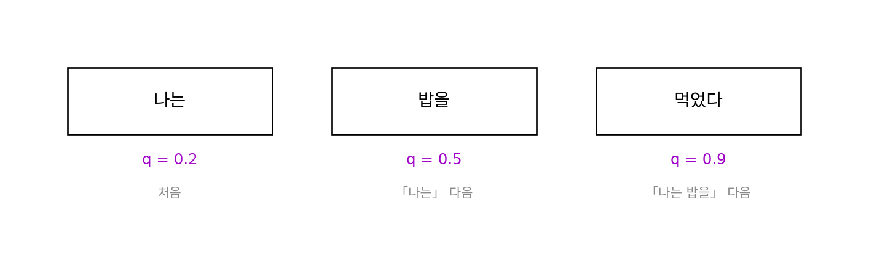

연쇄 법칙과 조건부 엔트로피: 앞을 알면 줄어드는 비트
언어 모델은 문장 하나를 토큰마다 「앞 토큰들을 보고 다음 토큰을 맞히는」 일로 나눠 적고, 손실은 토큰마다의 놀라움을 더해 평균 낸다. 그런데 놀라움이 더해진다는 약속은 서로 독립인 소식끼리의 이야기였다. 「나는 밥을」 다음에 「먹었다」가 올지는 앞 토큰에 크게 달려 있으니 독립이 아닌데, 그래도 더해도 될까? 그리고 앞을 아는 것이 다음 토큰에 드는 비트를 평균 얼마나 줄여 줄까?
역사: 글자 짝의 표에서 한 글자의 표를 빼기
섀넌은 1948년 논문에서 엔트로피가 지켜야 할 성질로 「두 번에 나눠 선택하기」를 들었다. 1/2, 1/3, 1/6 가운데 하나를 선택하는 일을 반반으로 먼저 나누고, 둘째 쪽이 나오면 다시 2/3, 1/3로 나누는 일로 보아도 엔트로피가 같아야 한다는 것이다. 같은 논문의 다른 대목에서 그는 두 사건 x, y의 엔트로피를 이렇게 적었다. 「결합 사건의 불확실성은 x의 불확실성에, x를 알 때 y의 불확실성을 더한 것이다.」 그리고 x를 알 때 y의 불확실성을 x가 나올 확률로 평균 낸 양을 조건부 엔트로피라 부르고, 그것이 y의 엔트로피보다 크지 않다는 것도 함께 보였다.
이 쪼개기가 숫자를 내는 도구가 된 것은 1951년 논문 「인쇄된 영어의 예측과 엔트로피」에서다. 섀넌은 앞 글자 N − 1개를 알 때 다음 글자의 불확실성(조건부 엔트로피)을 F_N이라 두고, N을 늘려 가며 영어 글자 하나의 엔트로피에 다가가려 했다. 앞 글자 하나를 아는 F₂를 직접 계산하려면 「T 다음에 H가 올 확률」 같은 조건부 확률표가 필요한데, 그가 가진 것은 암호 해독 안내서인 프랫(Fletcher Pratt)의 『Secret and Urgent』(1942)에 실린 글자, 두 글자 묶음, 세 글자 묶음의 빈도표였다. 그래서 두 글자 묶음의 엔트로피 7.70비트에서 한 글자의 엔트로피 4.14비트를 빼 F₂ = 3.56비트를 얻었고, 세 글자 묶음의 11.0비트에서 7.7비트를 빼 F₃ = 3.3비트를 얻었다. 세 글자 표는 낱말 경계를 넘는 묶음(TWO WORDS의 WOW)을 세지 않아서 섀넌이 손으로 대충 보정했고, 그래서 F₃는 앞의 값들보다 덜 믿을 만하다고 적었다. 네 글자 이상의 표는 없었으므로 그 너머는 낱말 빈도로 따로 계산했다.


두 글자 묶음 엔트로피에서 한 글자 엔트로피를 빼면 다음 글자의 엔트로피가 된다는 게 잘 안 와닿아요. 왜 빼면 되는 거예요?

두 글자 묶음 하나를 적는다고 생각해 봐요. 첫 글자를 적고, 그다음 둘째 글자를 적죠. 둘째 글자를 적을 때 받는 쪽은 무엇을 이미 알고 있어요?

첫 글자요. 그러니까 둘째 글자는 첫 글자를 아는 사람에게 남은 불확실성만큼만 적으면 되고… 묶음 전체가 7.70이면 첫 글자 4.14를 빼고 남은 3.56이 둘째 글자에 드는 비트네요.

그래요. 그런데 1951년에 섀넌이 F₄를 같은 방법으로 못 센 건 왜였을까요?

네 글자 묶음 빈도표가 없어서요. 26의 네제곱이면 45만 칸이 넘으니까, 손으로 세어 표를 만든 사람이 없었겠네요. 지금이면 텍스트 파일 하나로 몇 초면 셀 텐데요.

그래도 표가 크면 칸마다 나온 횟수가 몇 번 안 되잖아요. 횟수가 적은 칸으로 엔트로피를 계산하면 실제보다 작게 나오지 않아요?

좋은 의심이에요. 섀넌도 세 글자 값이 덜 믿을 만하다고 적은 이유 가운데 하나가 그거였어요. 표로 세는 방법은 앞을 길게 볼수록 막혔고, 그래서 그는 같은 논문에서 표 대신 사람의 머리를 썼어요. 처음 보는 글을 한 글자씩 맞히게 하고, 몇 번째 추측에 맞혔는지만 적는 거죠. 우리도 짧게 해 볼까요? 한 사람은 글을 선택해 틀린 횟수를 적고, 한 사람은 맞혀요.
제가 글 고를게요, 섀넌 역할이요. 서연이가 맞히는 쪽 해.
좋아요. 섀넌은 맞히는 쪽을 아내 베티에게 맡겼어요.
아내…. 그, 그러니까 민준이가 섀넌이면 제가 민준이의… 아, 아니 맞히는 쪽이요! 앞 글자를 다 아는 쪽.
응, 맞히는 쪽. 시작! 「오늘은 비가 와서 우산을 챙」 다음 글자는?
…「겼」.

한 번에 맞혔어. 그럼 처음부터 해 보자. 첫 글자는? 아무것도 모르는 상태야.
「나」? 아니고… 「그」? 「오」. 세 번 만에요. 앞을 모르니까 처음엔 한참 걸리고, 「우산을 챙」까지 들으면 거의 정해지네요.
그게 F₀에서 F₃으로 갈수록 숫자가 줄어든 일을 사람의 머리로 한 거예요. 섀넌은 몇 번째에 맞혔는지만으로 엔트로피의 범위를 냈고, 그렇게 앞을 백 글자쯤 알면 영어 글자 하나가 1비트 안팎이라는 값을 얻었어요. 그 전에, 표에서 빼기가 왜 늘 맞는지를 작은 표로 확인해 봐요.
날씨 짝 100쌍
어느 도시에서 오늘(X)과 내일(Y)의 날씨를 짝지어 100쌍을 모았더니 맑음–맑음 60쌍, 맑음–비 10쌍, 비–맑음 10쌍, 비–비 20쌍이었다. 오늘이 맑은 날은 70일, 비 온 날은 30일이므로 오늘 날씨 하나의 엔트로피는 H(0.7, 0.3) = 0.881비트이고, 내일 날씨도 비율이 같아 0.881비트다. 날씨 짝 하나를 네 가지 결과로 보면 엔트로피는 H(0.6, 0.1, 0.1, 0.2) = 1.571비트로, 날마다 따로 적는 0.881 + 0.881 = 1.763비트보다 작다.
짝을 적는 일을 둘로 쪼개 보자. 먼저 오늘 날씨를 0.881비트로 적는다. 오늘이 맑았다면 받는 쪽은 맑은 70일 가운데 내일도 맑은 날이 60일이라는 것을 아니, 내일은 (6/7, 1/7)로 적으면 되고 그 엔트로피는 0.592비트다. 오늘 비가 왔다면 내일은 (1/3, 2/3)라 0.918비트다. 오늘이 맑을 확률 0.7과 비 올 확률 0.3으로 평균하면 0.7 × 0.592 + 0.3 × 0.918 = 0.690비트이고, 0.881 + 0.690 = 1.571비트로 짝의 엔트로피와 꼭 같다(sources/entropy/s4_chain.py).
이렇게 X를 안다는 조건으로 Y의 엔트로피를 계산한 다음, 그 값을 X가 나올 확률로 평균 낸 양을 조건부 엔트로피 (X를 알 때 Y에 남은 평균 비트, conditional entropy)라 한다. 둘을 함께 적는 비트가 하나를 적는 비트와 그것을 안 뒤에 남은 비트의 합이라는 식은 연쇄 법칙이라 부른다.

연쇄 법칙은 평균만이 아니라 짝 하나하나의 놀라움에서도 맞는다. p(x, y) = p(x) p(y∣x)는 독립이 아니어도 늘 맞는 곱셈 규칙이고, 로그를 씌우면 −log₂ p(x, y) = −log₂ p(x) + (−log₂ p(y∣x))가 된다. 맑음–비 짝의 놀라움 3.322비트는 오늘 맑음의 0.515비트와, 맑은 날 다음에 비가 올 놀라움 2.807비트의 합이다. 독립이라는 조건은 둘째 소식을 첫 소식과 상관없이 재도 된다는 뜻이었을 뿐이고, 둘째 소식을 첫 소식을 들은 뒤의 확률로 측정하면 놀라움은 언제나 더해진다.
마지막 부등식은 평균에 대한 약속이라는 점을 놓치면 안 된다. 위 표에서 오늘 비가 왔다는 것을 안 뒤 내일의 엔트로피 0.918비트는, 아무것도 모를 때의 0.881비트보다 크다. 비 온 다음 날은 맑음과 비가 1 : 2로 섞여 있어 오히려 더 헷갈리기 때문이다. 그래도 맑은 날 뒤의 0.592비트와 확률로 평균하면 0.690비트로 줄어든다. 하나의 관측은 헷갈림을 키울 수 있어도, 관측하기 전에 평균을 내면 아는 것이 늘어서 남는 비트가 늘지는 않는다. 섀넌의 F₁, F₂, F₃이 4.14, 3.56, 3.3으로 줄어든 것도, 앞 글자를 하나 더 아는 것이 조건을 하나 더 거는 일이기 때문이다.
ML에서: 자기회귀 언어 모델의 손실
언어 모델이 토큰 n개짜리 글 x₁x₂…x_n에 주는 확률은 연쇄 법칙대로 q(x₁) q(x₂∣x₁) … q(x_n∣x₁…x_{n−1})로 쪼개진다. 로그를 씌우면 글 전체의 놀라움이 토큰마다의 조건부 놀라움의 합이 되고, 이것을 토큰 수로 나눈 것이 학습 기록에 찍히는 손실이다. 앞 토큰을 하나도 보지 않는 모델은 토큰 빈도만 쓰는 셈이라 섀넌의 F₁에 해당하고, 앞을 길게 볼수록 F₂, F₃처럼 조건이 늘어 토큰 하나에 드는 비트가 준다. 다만 모델이 줄일 수 있는 바닥은 글 자체의 조건부 엔트로피이고, 언어 모델의 손실은 그 바닥에 모델이 잘못 믿은 KL이 얹힌 값이다. 이렇게 앞을 보고 다음을 맞히는 모델의 확률이 어떻게 실제 0과 1의 줄이 되는지, 그 길이가 손실과 몇 비트 차이인지는 코드 길이를 실제로 만드는 이야기에서 측정한다.
문제 10. 친구가 사는 곳
새로 사귄 친구가 사는 곳을 맞히려 한다. 친구는 서울에 1/2, 부산에 1/4, 대전에 1/4의 확률로 살고, 도시가 정해지면 그 안의 구(서울 25개, 부산 구·군 16개, 대전 5개)는 균등하게 그럴듯하다. (가) 도시의 엔트로피와, 도시를 안 뒤 구의 조건부 엔트로피를 구하라. (나) (도시, 구) 짝의 엔트로피는 얼마이고, 구 46개를 균등하게 믿을 때와 비교하면 어떤가? (다) 「대전」이라는 소식을 들은 뒤 구를 알게 되는 놀라움과 처음부터 대전의 한 구를 알게 되는 놀라움을 비교해라.

(가)는 도시가 1/2, 1/4, 1/4라 H = 1.5비트예요. 구는 서울이면 log₂ 25, 부산이면 log₂ 16 = 4, 대전이면 log₂ 5니까, 도시 확률로 평균해서 0.5 × 4.644 + 0.25 × 4 + 0.25 × 2.322 = 3.902비트.
(나)는 연쇄 법칙대로 1.5 + 3.902 = 5.402비트야. 46개를 하나씩 확률로 적어서 직접 계산해도 5.402가 나와. 46개를 균등하게 믿으면 log₂ 46 = 5.524비트니까 0.12비트 길고.
균등하게 믿으면 왜 더 길까요? 서울의 한 구와 대전의 한 구는 실제로 얼마나 그럴듯해요?
구 하나의 확률을 직접 곱해 볼게요. 서울의 한 구는 1/2 × 1/25 = 1/50, 대전의 한 구는 1/4 × 1/5 = 1/20이에요. 대전의 구 하나가 서울의 구 하나보다 두 배 넘게 그럴듯한데, 균등하게 믿으면 그 차이를 버려요. 그게 크로스 엔트로피에서 본 KL 덤이네요.
(다)는요?
대전이라는 소식이 −log₂ 1/4 = 2비트, 그 뒤 구가 log₂ 5 = 2.322비트라 합이 4.322비트예요. 처음부터 대전의 한 구를 알게 되는 놀라움도 −log₂ 1/20 = 4.322비트. 같아요.

짝 하나의 놀라움도 둘로 쪼개지는 거네. 도시와 구는 독립이 아닌데도, 구를 도시를 안 뒤의 확률로 재니까 그냥 더해져.
그래요. 평균만이 아니라 결과 하나하나에서도 연쇄 법칙이 맞아요.

택배 주소를 시부터 쓰고 구를 쓰는 것과 같아요. 기사님이 시를 보고 나면 구는 그 시 안에서만 선택하면 되니까요.
문제 11. 문장 하나의 손실
언어 모델이 「나는 밥을 먹었다」를 세 토큰 「나는」「밥을」「먹었다」로 읽는다. 모델은 첫 토큰 「나는」에 0.2를, 「나는」 다음에 「밥을」이 올 확률로 0.5를, 「나는 밥을」 다음에 「먹었다」가 올 확률로 0.9를 주었다. (가) 문장 전체에 준 확률과 그 놀라움(nat)을 구하라. (나) 토큰마다의 놀라움을 더한 값, 그리고 토큰당 평균 손실과 비교해라. (다) 앞 토큰을 보지 않고 「먹었다」 하나만의 확률(예를 들어 0.001)로 놀라움을 측정해 더하면 무엇이 잘못되는가?

(가)는 0.2 × 0.5 × 0.9 = 0.09니까 −ln 0.09 = 2.408 nat이에요. (나)는 토큰마다 1.609, 0.693, 0.105를 더하면 2.408. 같고, 평균 손실은 0.803 nat이에요.
(다)는요? 「먹었다」만 따로 보면 아주 드문 낱말이라 0.001이라고 해 봐요.
그러면 「먹었다」의 놀라움이 −ln 0.001 = 6.908 nat으로 0.105의 예순 배가 넘어요. 더하면 문장의 놀라움을 크게 부풀려 계산하는 거고요.
그 부풀린 값은 무엇을 적는 비트예요?

앞을 모르는 사람에게 「먹었다」를 알려 주는 비트요. 그런데 받는 쪽은 「나는 밥을」을 이미 들었으니까, 그 사람에게 남은 놀라움만 더해야 해요. 조건 없는 확률로 측정해서 더하면 앞에서 이미 알려 준 비트를 또 세는 셈이에요.

그래서 언어 모델 손실은 늘 앞 토큰을 조건으로 한 확률로 계산하는 거네요. 앞을 잘 쓰는 모델일수록 「먹었다」 같은 토큰의 놀라움을 거의 0으로 만들고요. 내가 하는 게임의 루나 대사도 이렇게 한 토큰씩 맞히면서 배운 거겠네요.
그래요. 앞을 알면 남는 비트가 평균으로 줄어든다는 것이 조건부 엔트로피의 부등식이었죠. 그럼 그 줄어든 양 자체, 앞을 아는 것이 다음 토큰에 대해 알려 준 비트는 무엇으로 측정하면 될까요?